YINGZHOU ZHANG
Game Art Designer


Real Time Material Bathroom Project
BACKSTORY
This bathroom scene was completed as my core coursework for Real-time Digital Materials and Surfaces. I’ve long wanted to build a tiny, intimate personal living space of my own design. The concept of a girl’s cozy private bathroom felt full of storytelling potential, so I built this whole scene to showcase material creation skills.
Every texture you see within the environment was hand-built from scratch using Substance tools, and I will break down each material workflow below.
PROBLEM / WORK STEP BY STEP
First Substance Work: Bathroom Ceramic Tile
This was my first time learning Substance Designer, so I started with a basic repeating bathroom tile material. I added subtle hand-drawn small floral decals, soft ceramic gloss and slight grout wear to create a gentle pastel tile texture.
Bathroom tile Material by yingzhouzhang16 on Sketchfab
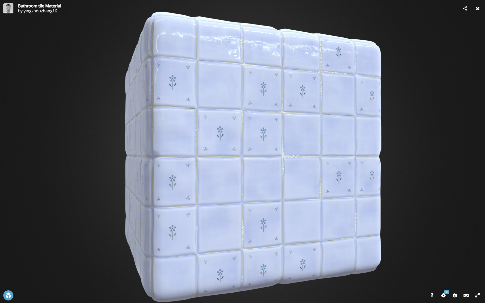
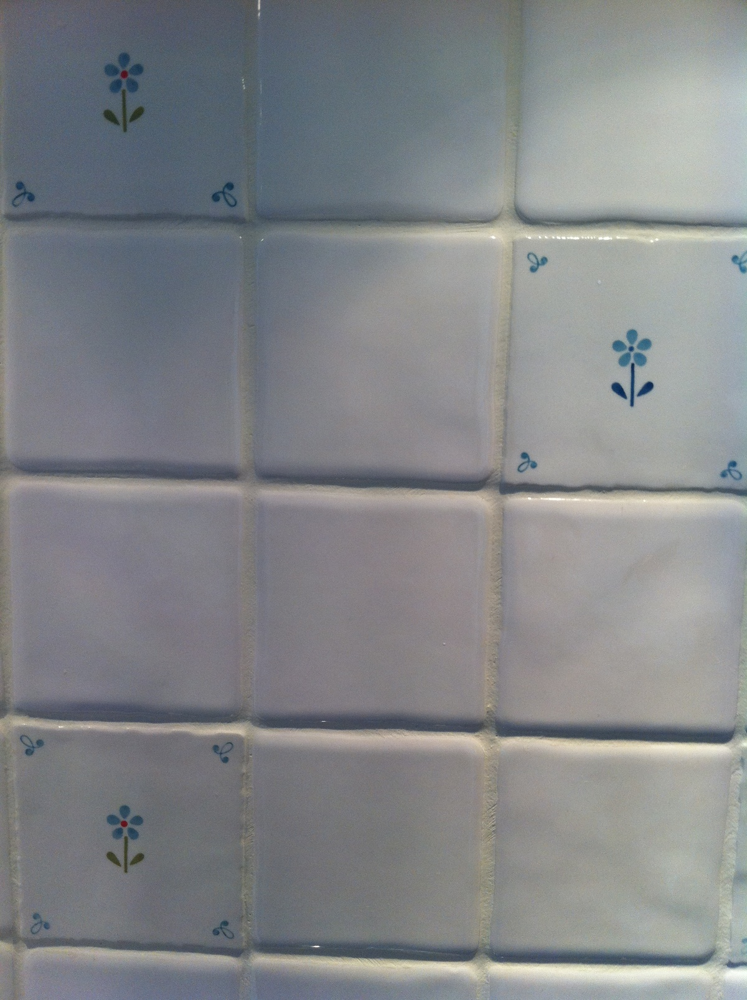
Reference
Non-organic Materials
After getting familiar with Substance Designer node logic, I expanded to a series of non-organic materials for bathroom daily items: decorative box cutter, printed toilet paper, blister pill packaging and more.
Decorative Box Cutter
Box cutter 𐙚⊹₊⋆☆ by yingzhouzhang16 on Sketchfab
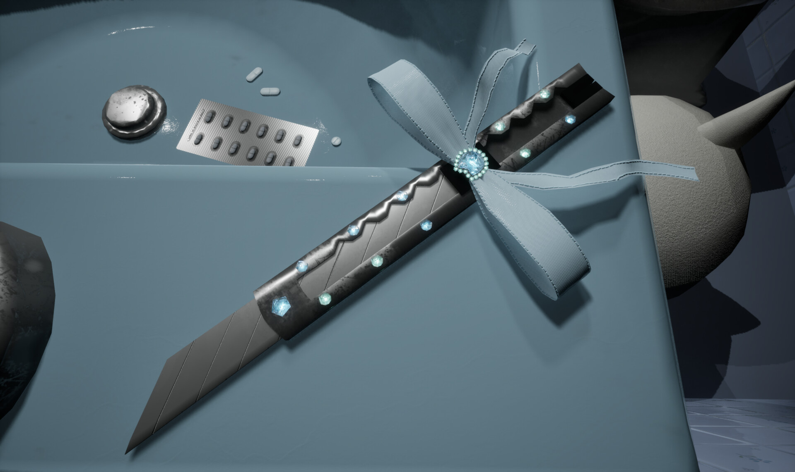
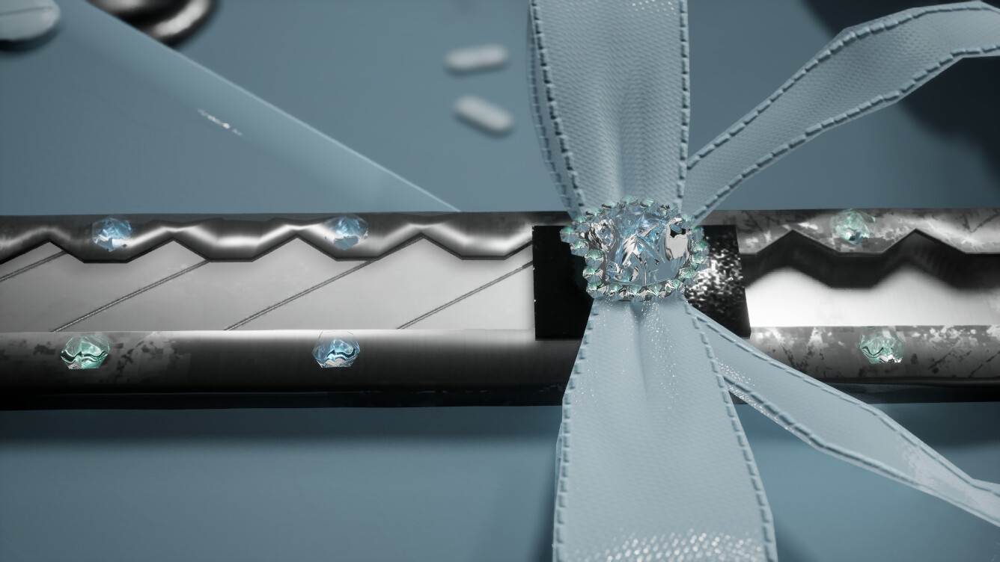

Reference
Printed Toilet Paper Roll
⋆.˚⟡⊹₊⋆Toilet Paper⋆.˚⟡⊹₊⋆angel by yingzhouzhang16 on Sketchfab
I designed handwritten soft text printed on toilet paper, with subtle paper crease and fibrous roughness to mimic real thin tissue texture.
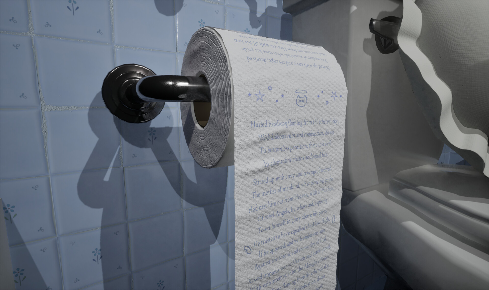
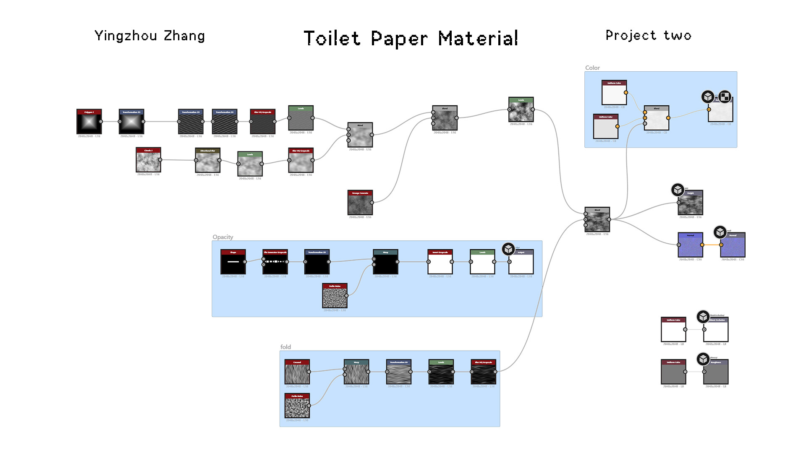
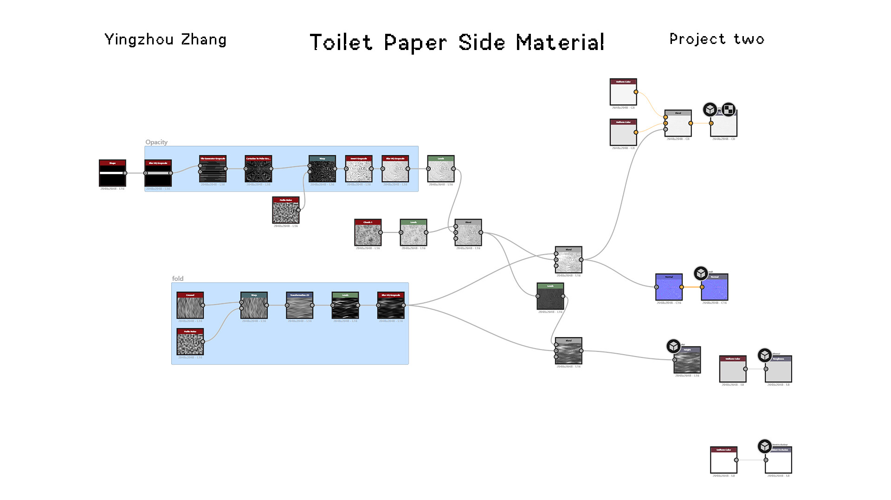
Pill Blister Packaging
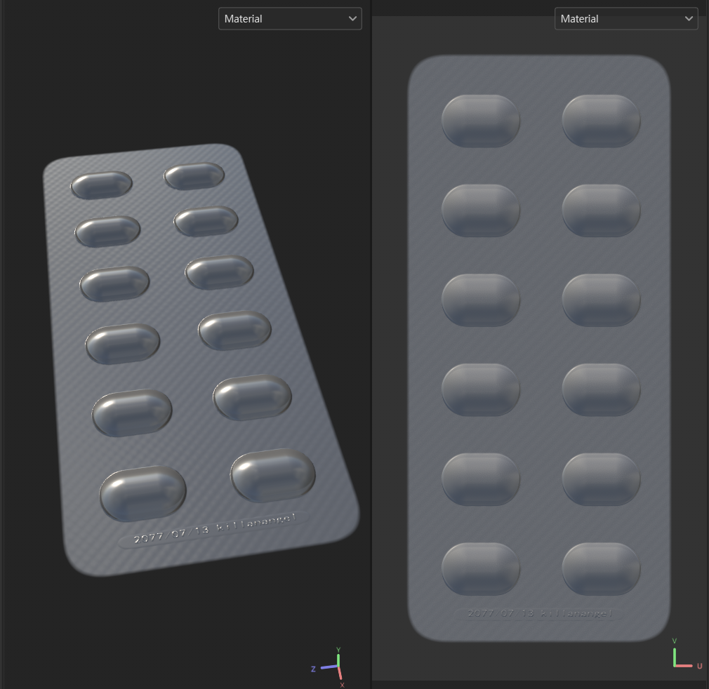
This material combines transparent plastic blister, textured foil backing and smooth pill surface, with subtle embossed text details on the metal layer.
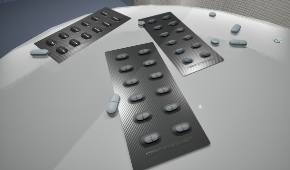

Reference
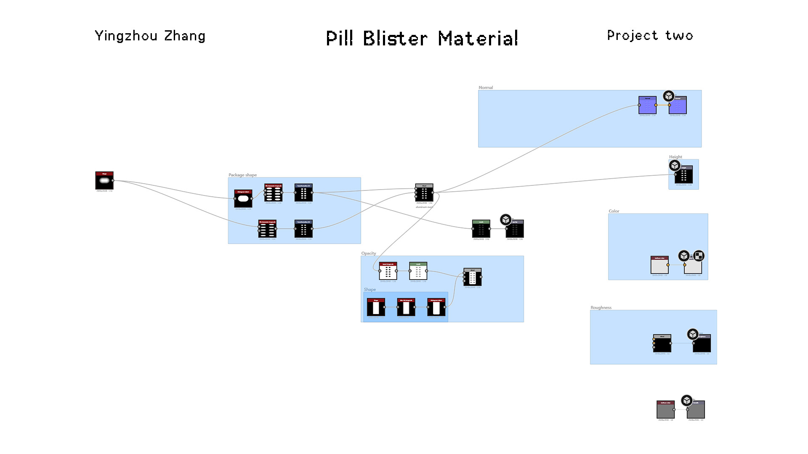
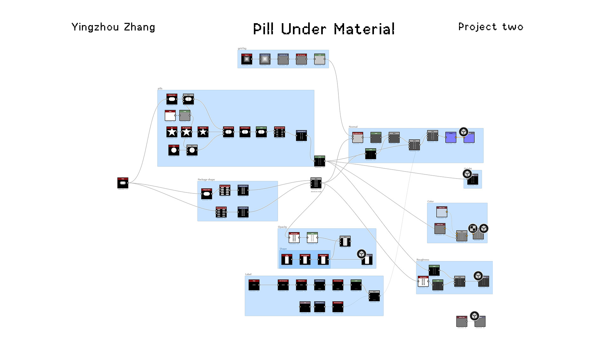
Organic Material: Pocky Biscuit
After finishing all hard surface props, I moved on to organic material creation, focusing on cookie and cream coated Pocky sticks, with tiny chocolate crumb detail and baked biscuit texture variation.
Pocky Cookie and Cream Flavor by yingzhouzhang16 on Sketchfab
Two separate node graphs were built: one for the baked biscuit base, another for the cream chocolate coating with scattered cookie crumbs noise layers.
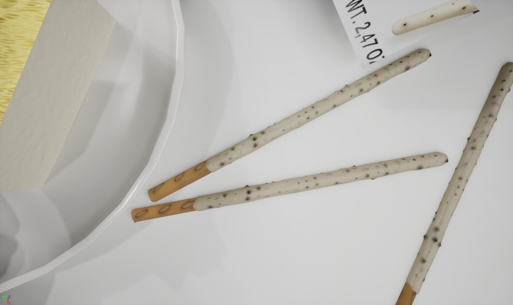

Reference
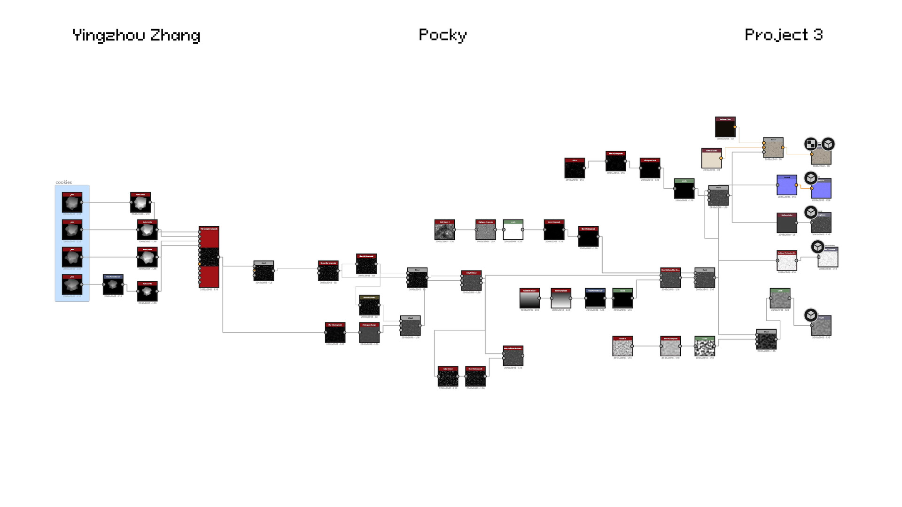
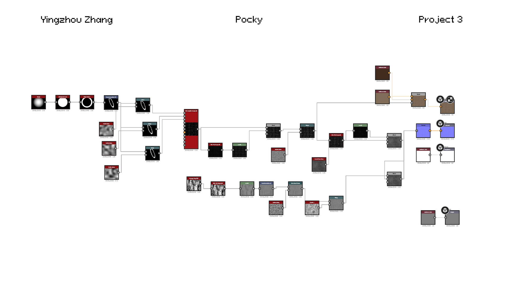
OUTCOME
Every texture created in this project is fully tileable and reusable for future interior environment works. Later I expanded this bathroom scene into a small playable real-time demo game, stay toned!
Click to Watch Video Showcase
REFLECTION
- This was my first full workflow project with Substance Designer; I learned to build complex layered PBR textures from zero using procedural node systems;
- I mastered balancing different material physical properties (ceramic gloss, paper softness, plastic transparency, baked food roughness) while keeping the whole scene unified in pastel blue-white tone;
- Procedural tileable textures drastically speed up interior scene production, and I will rely more on Designer for environment base materials in future projects;
- I really enjoyed learning this software and building a personal cozy space that matches my artistic vision; I plan to add more interactive gameplay details to the upcoming playable demo.